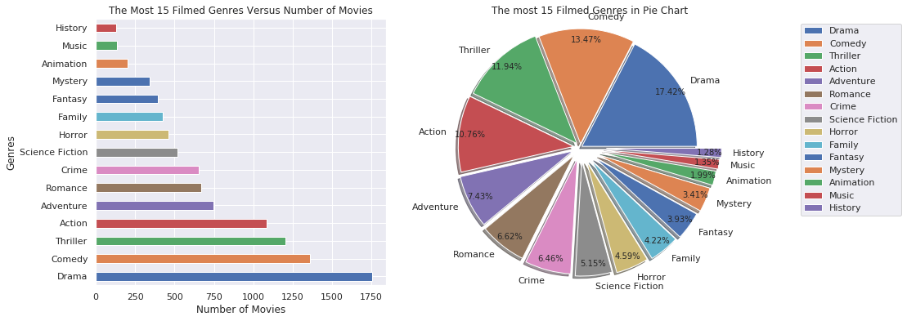

Investigating TMDB Movie Datasets
In this story, I will investigate the TMDB movies dataset which is collected between 1960 to 2015 with the information of title, budget, revenue, cast, director, genres, release date, release year, runtime, etc …
The primary goal of the project is making the exploratory data analysis using numpy, pandas, seaborn and matplotlib library. For this, we need the clean the data first. Previously, we should ask a question and find the answers inside this datasets. So, this purpose will help us with the cleaning process.
The original data source comes from Kaggle.
Questions to be Answered
What are all times highest and lowest profit movie?
What is all times top 10 movies which earn the highest profit?
What are the highest profit movie and the total profit for each year?
What is the all times highest and lowest budget movie?
What is all times top 10 movies which have the highest budget?
What are the highest budget movie and the total budget for each year?
What is the All times highest and lowest revenue movie?
What is all times top 10 movies which have the highest revenue?
What are the highest budget movie and the total budget for each year?
Which genres most used from 1960 to 2015?
Which cast were more filmed?
Which director was most filmed?
What is the Number of movies released in each month? What is the total profit by month?
Importing the Libraries and Data
- There are 10866 columns and 21 columns.
- "id", "imdb_id" columns are similar column so we can get rid of "imdb_id" column which is not given any useful information for this analysis.
- “popularity”, “budget”, and “revenue” columns are useful for this analysis and we are going to calculate the profit extract the revenue from the budget column. But previously we need the handle the missing values from budget and revenue column.
- “original_title”, “cast”, “director” columns have useful information about the movies.
- “homepage”, “tagline”, “keywords”, “overview”, “vote_average”, “budget_adj”, “revenue_adj” columns are not useful for analysis so these columns could be deleted from the data frame.
- “release_date”, and “release_year” columns also important. And we need the convert the release_date column to pandas DateTime object.
Data Cleaning
- Drop the duplicated rows.
- Replace the values from ‘0’ to ‘NAN’ then, drop the rows which have missing values.
- Change the format of release date into DateTime format.
- Delete the unused columns from Data Frame
- Checking the all columns are in the desired data type.
- Calculating the profit extracting revenue from the budget.
Exploratory Data Analysis
We will create the function to facilitate the answer the questions before going into exploratory data analysis.
This function is to find out the min and the max value of any given column. So, we can use this function on the budget, revenue, and profit to find out the highest and lowest values for given information.
The top_10 function calculates all times top 10 movies for any given columns, and also plot this information in a bar chart.
If we want to find out the total or highest value of any given column (budget, revenue, or profit) for each year separately then we could use the each_year_best function which is defined below. This function will plot the total and highest value of any given column for the last 15 years as default.
What are all times highest and lowest profit movie?
find_min_max('profit')
What is all times top 10 movies which earn the highest profit?
top_10('profit')

What are the highest profit movie and the total profit for each year?
each_year_best('profit')
What is the all times highest and lowest budget movie?
find_min_max('budget')
What is all times top 10 movies which have the highest budget?
top_10('budget'
What are the highest budget movie and the total budget for each year?
each_year_best('budget')
Let's write a function to find out the most filmed genres, cast or director
Which genres was more used from 1960 to 2015?
split_count_data("genres")

Which cast were more filmed?
split_count_data("cast")
Which director was most filmed?
split_count_data("director")
What is the Number of movies released in each month? What is the total profit by month?
Let’s try the found out if there is any correlation between "profit', 'budget', 'revenue', 'runtime', 'vote_count', 'popularity', 'release_year'
df_related= df[['profit','budget','revenue','runtime','vote_count','popularity','release_year']]
sns.pairplot(df_related, kind='reg')
- Budget vs Revenue: Budget and revenue both have a positive correlation between them. Means there is a good possibility that movies with higher investments result in better revenues.
- Profit Vs Budget: Profit And Budget both have a positive correlation between them. Means there is a good possibility that movies with higher investments result in better profit.
- Release Year Vs Vote count: Release year and vote Average have a negative correlation. Means that movie ratings (vote count) do not depend on the release year.
- Popularity Vs Profit: Popularity and profit have a positive correlation. It means that movie with high popularity tends to earn high profit.
Conclusion
We analysis the TMDB dataset which is collected between 1960 to 2015. Our goal here finding the answer utilizing this dataset. We could summaries this analysis result in the following items.
- The most profitable movie is Avatar and filmed in 2009. Star Wars: The Force Awakers is second, and Titanic is the third one.
- The last profitable movie is The Warrior’s Way and this movie also has the highest budget.
- The most popular genres was filmed Drama, Comedy, and Action.
- The most filmed actor was Robert De Niro, Bruce Wills and Samual L. Jackson.
- The most filmed director was Steven Spielberg, Clint Eastwood, and Ridley Scott.
- The most filmed production company was Universal Pictures, Waner Bros, and Paramount Pictures.
- The most profitable mounts are June, December, and May.
- According to TMDB dataset, all times most popular movies are Jurassic World, Mad Max: Fury Road, and Interstellar.
- All times most voted movies are Inception, The Avengers and Avatar.
- Revenue and budget both have a positive correlation between them.
- There is a high probability that movies with higher investments result in better profit
You may also found this project at my Medium and also in my Kaggle.